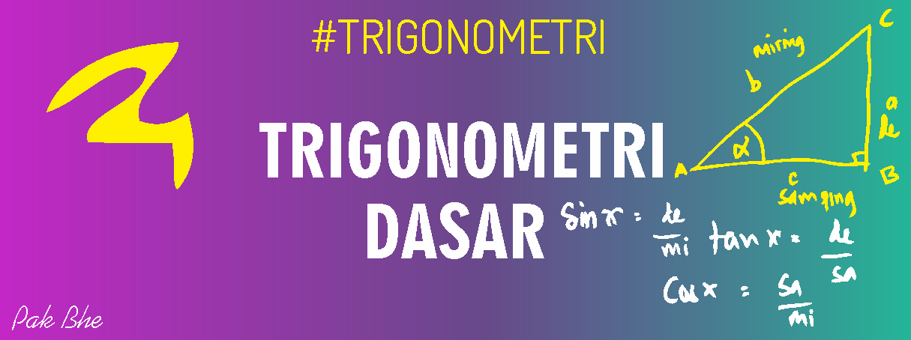
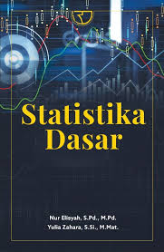
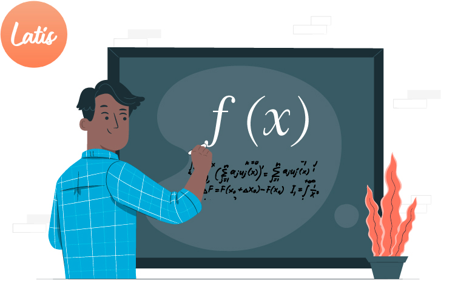

Rumus Bangun Ruang dan Aplikasinya dalam Kehidupan
Dipublikasikan pada: 24 November 2024
Bangun ruang adalah bentuk tiga dimensi yang memiliki panjang, lebar, dan tinggi. Contoh-contoh bangun ruang adalah:
- Kubus: Luas permukaan = 6 × sisi², Volume = sisi³
- Balok: Luas permukaan = 2 × (pl + pt + lt), Volume = panjang × lebar × tinggi
- Bola: Luas permukaan = 4 × π × r², Volume = 4/3 × π × r³
Artikel Terkait

Mengenal Trigonometri dan Manfaatnya
Trigonometri adalah cabang matematika yang mempelajari hubungan antara sudut dan sisi dalam segitiga.

Statistika Dasar: Mean, Median, dan Modus
Artikel ini menjelaskan apa itu mean, median dan modus.

Fungsi Matematika dan Pentingnya dalam Teknologi
Fungsi matematika menghubungkan setiap elemen pada himpunan domain dengan tepat satu elemen di himpunan kodomain.